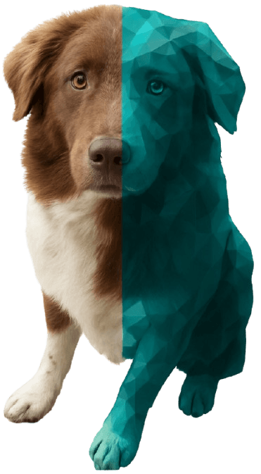
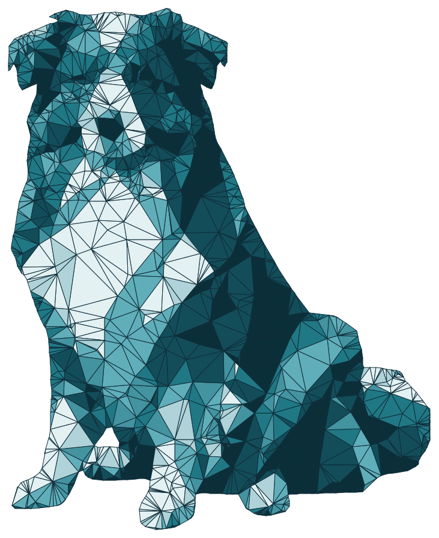

Всичко за ежедневната работа на клиниката. Без месечни такси.
Картони, записвания и напомняния на едно място, достъпни от всяко устройство. Мигрираме данните ви от стария софтуер безплатно.
Знаем как изглежда работата в малка клиника
Вие сте и ветеринар, и рецепция, и счетоводство. Нямате IT отдел, нито бюджет за скъп софтуер. А решенията на пазара често създават повече работа, отколкото спестяват:
Остарели и тромави
Програми отпреди десетилетия, които работят само на един компютър в кабинета.
Скъпи за това, което предлагат
Високи такси за основни функции, които всъщност би трябвало да са даденост.
Заключват данните ви
Веднъж вкарани, картоните остават заключени вътре — смяната на софтуер изглежда невъзможна.
Оставят ви сами
Без реална поддръжка, когато нещо не работи.
Решихме да направим обратното на всичко това.
Започвате за дни, не за месеци
Всичко важно — безплатно
Без такси за основното
Картони, записвания, напомняния, клиентска база — всичко за ежедневната работа е безплатно. Плащате само ако добавите разширени AI функции.
Достъпно отвсякъде
Работи в браузъра на всяко устройство — без инсталация, без поддръжка от ваша страна.
Безплатна миграция на данни
Прехвърляме информацията ви от стария софтуер без допълнително заплащане и без прекъсване на работата ви.
Данните са ваша собственост
Можете да изтеглите и експортирате всичко по всяко време, в стандартен формат — включително ако решите да ни напуснете.
Автоматични напомняния
Ваксини, обезпаразитяване, профилактика — системата напомня вместо вас, на вас и на клиентите ви.
Реална поддръжка
Пишете ни и ви отговаря човек от екипа, не автоматичен отговор. Първите 20 клиники получават безплатна поддръжка.

Как се роди VetCare
Имах куче — Рекс.
Рекс носеше постоянно каишка против външни паразити. Бях спокоен, че е защитен. Но когато се разболя от рядка болест, пренасяна от кърлеж, разбрах нещо твърде късно: мислех, че каишката действа девет месеца, а последния път в клиниката бяха сложили такава за шест. Срокът ѝ беше изтекъл, без да знам.
Софтуерът на клиниката не изпращаше напомняния. А аз нямах никакъв начин да проверя каква каишка е сложена и докога е валидна.
Рекс не оцеля.
След това реших да създам софтуера, който можеше да го спаси — такъв, който напомня навреме, държи информацията достъпна и не оставя място за подобни нелепи пропуски. Това е VetCare.
Ние сме екип от инженери и ветеринари и вярваме, че модерният, грижовен софтуер не бива да е лукс за клиниките. Разработваме VetCare заедно с ветеринари, които ни казват какво наистина им трябва.
Присъединете се към първите 20 клиники
VetCare е в ранен етап и това е предимството: първите 20 клиники получават безплатна поддръжка и пряко влияние върху това какво разработваме след това. Създаваме продукта заедно с вас.
Защитено от hCaptcha — важат неговите Политика за поверителност и Общи условия.
Прозрачни цени, без изненади
Безплатно
Всички функции, нужни за ежедневната работа на клиниката, са безплатни. Без начална такса, без скрити такси, без срок и без кредитна карта.
Разширен
Допълнителни AI функции, които оптимизират работата на клиниката.
Каквото и да изберете, данните ви остават ваши и можете да ги изтеглите по всяко време.

Пробвайте VetCare сега
Без инсталация, без ангажимент. Въведете имейла си и влезте в готов демо акаунт с примерни данни — разгледайте на спокойствие как работи всичко.
Често задавани въпроси
Имате въпрос? Пишете ни
Ако не сте намерили отговор по-горе, оставете ни съобщение. Отговаря човек от екипа.
Или ни пишете директноhello@vetcare.bg